HBM · 파운드리 · 어드밴스드 패키징 · 소부장 등 AI 공급망. 결정에 영향 주는 정수만 — 테제·기술·병목·경쟁·타임라인·판정. 최신순 누적.
2026.09.01AI 투자 프레임이익 지속성현금의 방향리드타임 병목소부장·건설·보안KOSPI 박스권LS 신중호
이익 모멘텀에서 이익 지속성으로 — 현금을 쓰는 쪽이 아니라 흘러가는 쪽
한 줄: AI 내러티브는 쏠림 → 허들(현위치) → 확산 중 가운데 칸에 있다.
투자 프레임이 이익 모멘텀에서 이익 지속성으로 바뀌었고, 그래서 다음 주도주는
현금을 투입하는 주체(하이퍼스케일러·엔비디아·메모리)가 아니라 그 현금이 흘러가는 지점에서 나온다.
LS가 지목한 세 자리는 건설·에너지 인프라 / 반도체 전공정 소부장 / 보안·S/W.
선정 기준은 ① 현금이 도달하는 곳 ② 비용·병목을 풀어주는 곳 ③ 고용·물가 측면에서 사회적 반발이 적은 곳.
01
전환 — 무엇이 바뀌었나
지난 1년의 국내 증시를 LS는 '롤러코스피'로 부른다. 전자·닉스의 추동력이 약해진 이유는
실적이 꺾여서가 아니라 프레임이 바뀌어서다. 성장(Capex·메모리 가격)이 모든 우려를 삼키던 구간이 끝나고,
시장은 얼마나 버느냐가 아니라 얼마나 오래 버느냐를 묻기 시작했다.
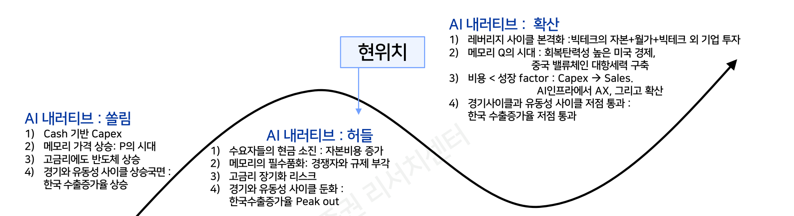
LS 그림.'현위치'는 곡선의 내리막 초입 — 쏠림(Cash 기반 Capex·P의 시대)을 지나 허들(현금 소진·경쟁자·규제·수출 Peak out)에 들어섰고, 확산(레버리지 사이클 본격화·메모리 Q의 시대)은 그 다음이다. 이 노트 전체가 이 한 장의 각주다. 자료: LS증권
허들 구간을 만든 네 가지 배경:
배경
내용
숫자
① 현금 소진
메모리 가격 상승이 이제 경쟁력이 아니라 고객의 비용. 하이퍼스케일러 FCF는 꺾이고 메모리 3사 FCF가 급증
FCF 역전
② Cash→Debt
연준 긴축기(23~24)의 M7 강세는 현금 투자였다. 25년 이후 차입 급증 — 금리에 연동되는 Capex로 성격이 바뀜
26년 M7 회사채 2,230억달러(+156% YoY) · Non-IG DC 포함 조달 25년 1,980억달러(23년 150억)
③ 경쟁자
중국 모델의 가성비. 인프라 규제로 Q 증가 없는 P 경쟁이면 미국 AI 기업 마진이 깎인다
미국 기업 사용 토큰 중 중국모델 44.99%(26년 평균 33.9% ↔ 25년 8.9%)
LS 그림. 왼쪽: 1년 만에 8.9% → 44.99%. 오른쪽: Intelligence Index 태스크당 비용이 DeepSeek V4 Flash $0.02 vs 프론티어 $1.5~2.75 — 두 자릿수 배율. 「The tokens must flow」에서 정리한 "모델 커모디티 ≠ 회사 커모디티" 논쟁의 가격 측 증거이자, 미국 랩 마진 압박의 실제 경로. 자료: Open Router·Artificial Analysis·LS증권
02
그래서 버블인가 — 아직 아니라는 근거와, 조건
LS의 답은 "버블 붕괴는 아닐 것". 근거는 주가 밸류에이션이 아니라 실물 레버리지다.
과거 버블 붕괴는 밸류 레벨이 매번 달랐지만 조건은 같았다 —
① 기업부채/GDP가 3년 전 대비 +5%p 속도로 늘고 ② 마진뎁(증거금 대출) 증가율이 전년 대비 +40% 이상이며 ③ 동시에 연준 긴축이 진행 중이거나 임박.
닷컴은 현금흐름 없는 기업에, 금융위기는 현금흐름 없는 가계에 대출이 나갔다.
지금은 현금흐름 우량한 빅테크가 주체다.
다만 그게 안전하다는 뜻은 아니다. LS 자신이 다음 문장으로 조건을 단다 —
"앞으로의 문제는 빅테크 이외 기업들의 투자 속도". 즉 이 논리는
차주가 빅테크에서 그 밖으로 넘어가는 순간 뒤집힌다.
규제 완화(바젤III 엔드게임 무력화·SLR)는 은행의 직접 대출이 아니라
사모신용을 통한 간접 공급을 늘리는 형태로 나타날 가능성이 높고(캔자스시티 연은:
C&I 대출 ROE 7.9% vs private credit 대출 ROE 29.2%), 이는 단기 유동성 경색을 완화하는 대신
장기 신용 리스크의 전이 경로를 넓힌다.
Bank of NVDA — 순환금융이 금융시장으로 이전됐다. 기존엔 엔비디아→AI기업→GPU 구매→엔비디아 매출의 닫힌 고리였는데,
이제 월가 자본을 모아 AI Compute를 '투자 가능한 인프라 자산'으로 만드는 구조다.
엔비디아는 직접 재무위험을 낮추지만, 최종 수요·담보가치·ROIC 검증 부담은 금융시장으로 넘어간다.
생태계 지분투자 $95.6B = 총자산 $320.3B의 30%, 보유 현금+채권 $56.6B의 1.7배.
03
현금의 방향이 곧 테마
이 리포트에서 가장 실용적인 한 장. AI 사이클의 현금은
실물경제 → 빅테크(구독·광고·이커머스) → GPU 밸류체인(엔비디아 마진) → 메모리로 이동해 왔다.
지금 메모리 3사의 FCF가 수직으로 서고 하이퍼스케일러 FCF는 내려온다.
그 다음 질문은 "메모리가 번 현금이 어디로 나가는가"이고, 답은 CAPA 증설 — 즉 장비·소재와 주주환원이다.
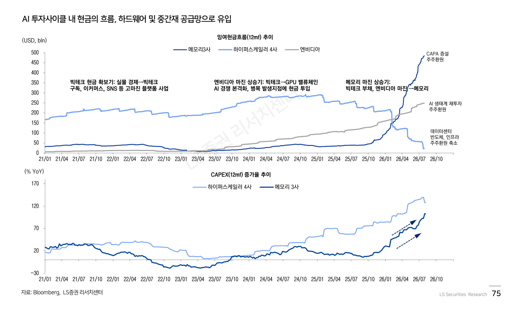
LS 그림. 위: 메모리 3사 FCF(진한 선)가 26년 들어 수직 상승하며 하이퍼스케일러를 역전, 화살표는 그 돈의 출구(CAPA 증설 · 주주환원). 아래: Capex 증가율은 하이퍼스케일러·메모리 둘 다 다시 올라간다. 돈은 계속 나가는데 받는 쪽이 바뀐다는 것이 이 노트의 축. 자료: Bloomberg·LS증권
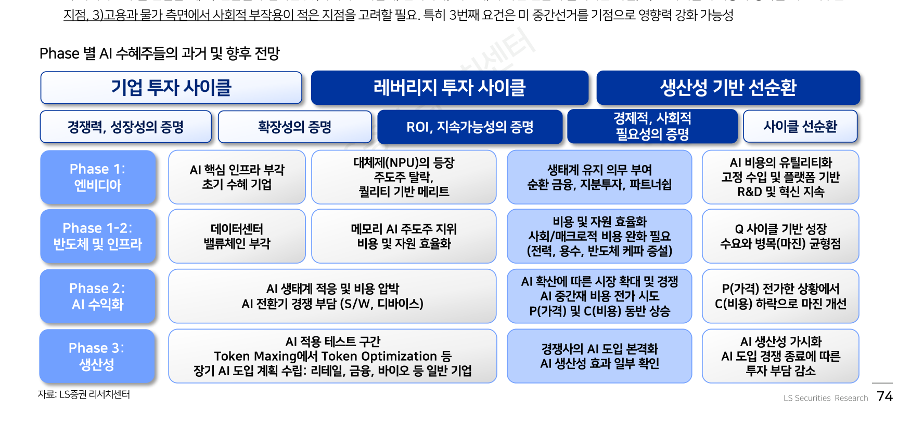
LS 표. Phase 1(엔비디아) → 1-2(반도체·인프라) → 2(AI 수익화) → 3(생산성). 각 Phase의 통과 조건이 경쟁력 → 확장성 → ROI·지속가능성 → 경제·사회적 필요성으로 올라간다. 지금 시장이 요구하는 건 세 번째 칸이고, 메모리는 이미 "주도주 지위 → 비용·자원 효율화" 칸으로 이동했다고 본다. 자료: LS증권
04
시간의 병목 — 리드타임이 마진을 만든다
주도주를 만드는 두 번째 요인은 시간이다. 금융의 리드타임은 하루~몇 달인데 실물 인프라는 몇 년이다.
이 괴리가 병목을 만들고, 투입된 자금 규모(투자 의지)가 클수록 그 병목 구간 공급자의 마진이 올라간다.
25년 초 스타게이트를 기점으로 메모리·서버가 6~8개월 뒤 리레이팅에 들어간 것이 그 사례다.
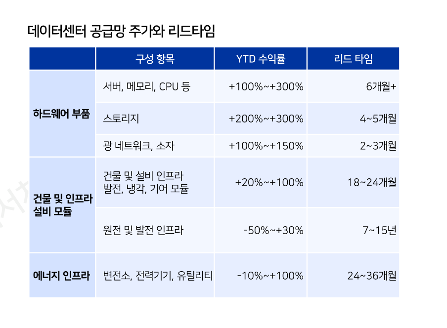
LS 표. 이미 오른 것(하드웨어 +100~300%, 리드타임 2~6개월)과 아직 안 오른 것(원전 −50~+30%, 7~15년 / 에너지 인프라 −10~+100%, 24~36개월)의 대비. 리드타임이 긴 칸일수록 주가가 덜 반영됐다 — 이 표가 신주도주 후보 3개를 고르는 실제 근거다. 자료: JP모건 인프라·Global Data Center Hub·LS증권
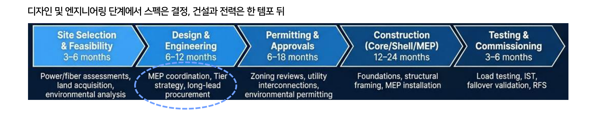
LS 그림. 컴퓨팅 스펙은 Design & Engineering(6~12M)에서 확정되고 MEP(기계·전기·배관) 설계가 거기에 묶인다. 그 뒤 6~18개월이 인허가, 12~24개월이 건설. 미국의 데이터센터 반대 운동과 정치 논쟁이 지금 Permitting 칸에 서 있다는 것이 LS의 위치 판정이다. 자료: Global Data Center Hub·LS증권
05
한국 — 박스권 5,200~7,500, 그리고 수급 취약성
LS의 KOSPI 밴드는 7,500 ~ 5,200pt. 근거는 이익증가율(12MF)의 정점 통과와 수급이다.
반등이 낙폭 대비 피보나치 50%(7,324pt)를 넘지 못했고,
거래대금은 90조원대에서 8/28 26.6조원까지 식었다.
전저점 5,262.77(7/29) 테스트 가능성을 열어둔다는 것이 결론.
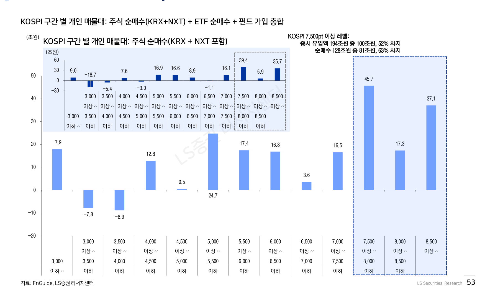
LS 그림. 개인 자금이 7,500pt 이상 구간에 집중 — 증시 유입액 194조 중 100조(52%), 순매수 128조 중 81조(63%). 위로 갈수록 본전 매물이 두껍다는 뜻이고, 이게 상단을 누른다. 개인 누적 193.8조는 가계 유동성 대비 12%로 2020~21년(12.7%)에 준하는 레벨. 자료: FnGuide·LS증권
반도체는 "닉스보다 전자". 논리는 상단은 AI 이슈가, 하단은 주주환원이 막는다는 것.
LS 추정으로 삼성전자는 27년 주주환원율 50% 진입(DPS 33,676원 · 시가배당 13.1%), 하이닉스도 같은 50%지만
주가에 이미 반영된 정도가 다르다고 본다. 다만 OPM 추정은 하이닉스가 압도적으로 높다(26~27년 77~79% vs 삼전 49→57%)는 점에서
이 선호는 이익의 크기가 아니라 이익의 지속성·수급 여력에 대한 베팅이다.
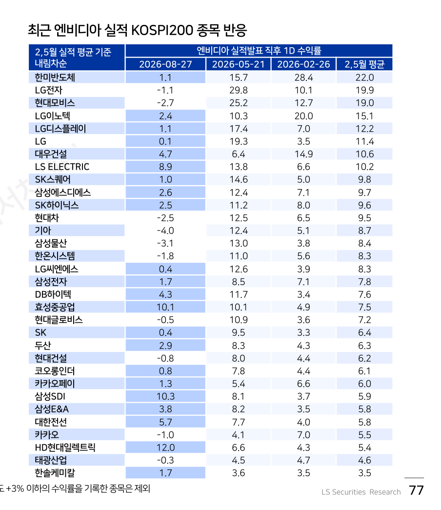
LS 표. 26년 2·5월 엔비디아 실적일엔 한미반도체 +22%, LG전자 +19.9%, 현대모비스 +19%가 평균이었는데, 8/27에는 그 종목들이 죽고(한미 +1.1, LG전자 −1.1) HD현대일렉트릭 +12.0, 삼성SDI +10.3, 효성중공업 +10.1, LS ELECTRIC +8.9가 반응했다. 같은 이벤트에 시장이 다른 칸을 눌렀다 — 로테이션의 1차 증거이자 이 리포트의 실증 근거. 자료: Bloomberg·FnGuide·LS증권
06
후보 ① 건설·에너지 인프라 — 병목이 정치로 드러난 자리
현금과 병목이 교차하는 첫 지점. 국내 3대 메가 프로젝트로 AI 데이터센터 18.4GW 증설이 제시됐고,
기업별 목표치를 합산하면 시장 규모는 100조원을 상회한다(지난해 국내 건설수주 200조).
결정적인 건 플레이어 수 — 국내 건설시장 참여자는 1.3만여 개인데 DC 시장은 15~20개다.
AI DC는 공사비의 MEP 비중이 70~80%(일반 60.3%)까지 올라가 기존 실적 있는 EPC 위주로 진입장벽이 생긴다.
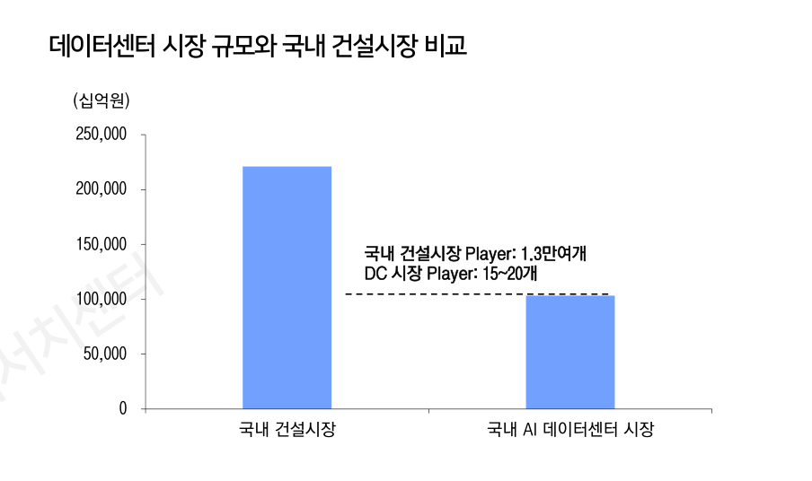
LS 그림. 국내 건설시장 220조 vs AI 데이터센터 100조 — 시장 크기는 절반인데 나눠 갖는 곳은 1/650(1.3만 개 vs 15~20개). 1인당 몫이 다르다는 것이 이 그림의 전부. 자료: LS증권
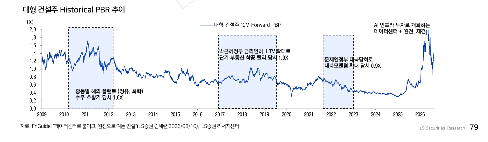
LS 그림. 대형 건설주 12MF PBR이 중동 플랜트 호황기 1.6X를 넘어 2X 이상을 찍고 조정 중. 지난 15년 어느 국면(부동산 랠리 1.0X, 대북 모멘텀 0.9X)보다 높다 — 병목 논리는 맞아도 이미 싸지 않다는 점은 같이 적어둔다. 자료: FnGuide·LS증권
왜 하필 건설인가 — 사회적 부작용 논리. 미국 지자체 모라토리엄 사유 1위는 용수/에너지(98건), 다음이 부지·용도(95건)다.
데이터센터는 투자금 10억달러당 장기 고용(FTE)이 모든 발전·인프라 항목 중 최하위다.
즉 물가·고용 측면에서 반도체·DC보다 건설·인프라로 돈이 가는 게 정치적으로 싸다.
중간선거를 앞두고 이 차이가 커진다는 것이 LS의 핵심 논거.
선호주: 장기 두산에너빌리티·현대건설 / 차선호 삼성물산·삼성E&A / 단기 모멘텀 GS건설 · 파이프라인 대우건설.
07
후보 ② 반도체 전공정 소부장 — 메모리의 현금이 향하는 곳
03절의 "메모리가 번 돈은 어디로 나가는가"에 대한 직접적 답.
후공정에서 전공정으로 시선이 이동한다. 이유는 두 가지 —
① AI 메모리 수요에 대응한 본격 CAPA 증설이 시작됐고,
② 전공정은 후공정보다 리드타임이 길어 병목 인식 강도(P 상승)가 세고 선행 발주로 수주 가시성이 먼저 나온다.
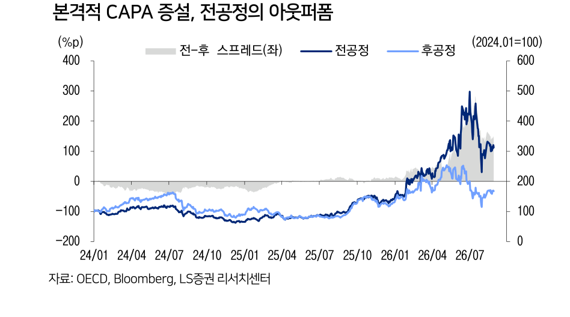
LS 그림. 26년 들어 전-후 스프레드(회색)가 위로 벌어지며 전공정이 아웃퍼폼. 단, 이건 이미 일어난 일이다 — 논거로는 쓰되 진입 신호로 읽지 말 것. 자료: OECD·Bloomberg·LS증권
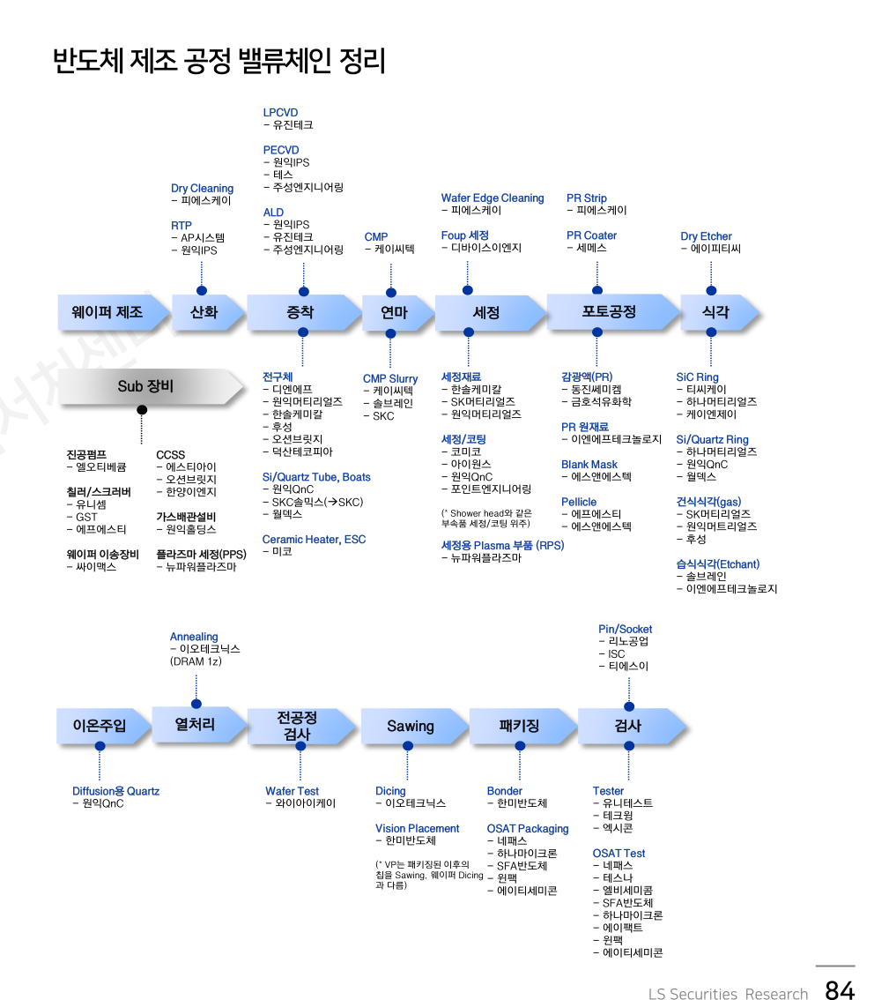
LS 표. 공정 단계별 국내 업체 지도 — 이 노트에서 가장 오래 쓸 한 장. 보유 중인 케이씨텍은 연마(CMP)와 CMP Slurry 두 칸에 동시에 걸려 있다(장비+소재 양쪽). 전공정 증설이 실제로 돌면 어느 칸이 먼저 움직이는지 여기서 역추적할 수 있다. 자료: LS증권
여기서 자기 점검. 이 절은 이미 들고 있는 종목(케이씨텍)의 논거를 강화하는 문단이다.
그래서 확증편향 위험이 가장 큰 자리다. LS 본인도 "이미 상당 부분 밸류는 높아졌다"고 쓴다.
보유 근거로 삼되 추가 매수의 근거로는 쓰지 않는다 — 진입은 가격(베이스 돌파)이 결정하지 리포트가 결정하지 않는다.
08
후보 ③ 보안·S/W → 그리고 Phase 3(생산성)
세 번째 자리는 사이버보안. 논리는 공격 소요시간은 줄고 방어(패치) 대응시간은 늘어 상대적 병목이 생긴다는 것.
2025년 취약점 노출 4.8만 건에 패치는 7.5천 건(Mitiga.io).
AI·자동화가 퍼지며 폐쇄망이던 OT 설비까지 네트워크로 연결돼 CISA 권고안 발행 1위가 핵심 제조업이다.
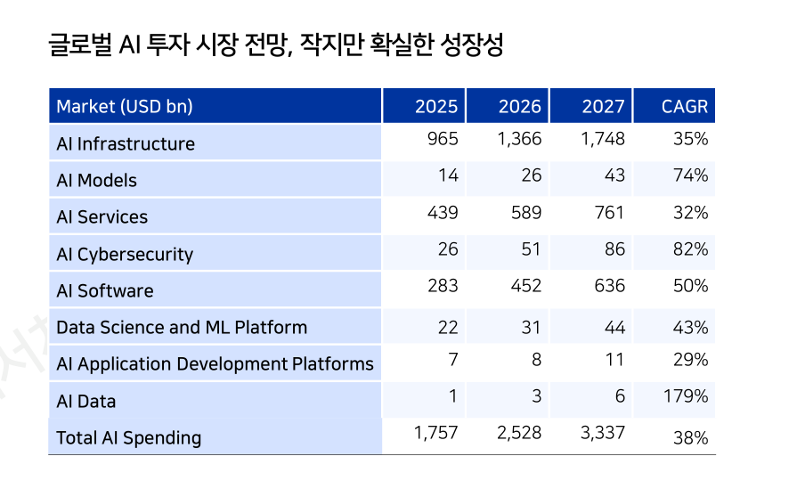
LS 표(Gartner). 전체 AI 지출은 26년 $2,528bn → 27년 $3,337bn(CAGR 38%)인데, AI Cybersecurity가 CAGR 82%로 인프라(35%)의 두 배 이상. 절대 규모는 작지만($26bn → $86bn) 증가율이 가장 가파른 칸. 자료: Gartner·LS증권
마지막 칸인 Phase 3 = 생산성은 아직 바텀업 사례 단계다. 다만 숫자가 나오기 시작했다 —
Airbnb: 고객 문의의 45%를 사람 개입 없이 처리, 예약 건당 지원비용 −16% YoY, 제품 출시 소요기간 −60%, 신규 기능 건수 +80%.
Expedia: 2Q26 매출 +14%인데 순이익 +166%(OPM 12%대 → 18%대).
LS는 미국 Input-Output 데이터로 AI 대체 가능 Input 비율 × 인건비 압박 축을 만들어 섹터를 선별했고,
소프트웨어 · 미디어/교육 · 통신서비스 · 호텔/레저 · 건강관리가 상위로 나온다.
이 절이 진짜 중요한 이유. Phase 3는 종목 아이디어가 아니라 사이클 지속 여부의 검증 지표다.
일반 기업의 AI 투자 → S/W 업종 실적 → 빅테크 클라우드 성장 가속의 체인이 실제로 돈다면
AI 사이클은 확산으로 넘어가고, 안 돌면 허들 구간이 길어진다.
S&P500 소프트웨어 EPS 증가율과 B2B S/W 주문이 그 관찰 창구.
09
판정 · 반대논리 · 확인 지표
테제
AI 사이클은 끝나지 않았지만 돈을 받는 칸이 바뀐다. 판별 기준 셋 —
① 현금이 흘러 들어가는 지점(투입 주체 아님) ② 비용·병목을 해소하는 지점
③ 고용·물가 부작용이 적은 지점. 세 조건이 겹치는 곳이 건설·에너지 인프라, 반도체 전공정 소부장, 보안·S/W.
반대논리
① 순환매 주장은 셀사이드에 구조적으로 유리하다 — 거래를 만든다.
② 리드타임 표의 YTD 수익률은 이미 일어난 일이라, "전공정이 아웃퍼폼했다"는 관찰은 후행이다.
③ KOSPI 7,500~5,200은 폭이 44%라 사실상 거의 모든 경로를 포함한다. 피보나치는 사후 도구.
④ 삼전 27년 OP 664조 같은 극단적 추정치를 쓰면서 동시에 박스권을 말하는 건 내부 긴장이다 — 둘 중 하나는 틀린다.
⑤ 건설·소부장·보안 3후보는 이미 컨센서스에 근접했고 건설 PBR은 2X를 찍고 내려온 자리다.
⑥ 8/27 엔비디아 실적일 반응이 전반적으로 약했던 건 로테이션이 아니라 그냥 리스크오프였을 수 있다.
판정
프레임으로 채택. 종목 확장의 근거로는 쓰지 않는다.
가장 값어치 있는 문장은 "현금을 투입하는 주체가 아니라 현금이 흘러가는 지점" —
이건 CAPEX 게이트가 4/4 우호인데 주가는 −30%였던 괴리를 설명한다.
지출 의지는 게이트가 보지만, 그 돈을 누가 받는지는 안 보고 있었다.
반면 건설·보안으로 바구니를 넓히는 건 3不 원칙과 집중 원칙에 정면으로 어긋난다 — 공부와 베팅은 별개.
실전 함의는 딱 둘: (a) 보유 소부장의 논거 강화, (b) 하단 5,200 시나리오를 익스포저 관리에 반영.
KPI
① 메모리 3사 FCF → Capex 전환 속도(장비 발주로 실제 나가는지) ·
② 미국 지자체 모라토리엄 누적 건수(251→, 중간선거까지) ·
③ S&P500 소프트웨어 EPS 증가율 · B2B S/W 주문(Phase 3 체인의 작동 여부) ·
④ 중국 모델 토큰 점유율 44.99%가 더 오르는지 ·
⑤ 엔비디아 실적일 국내 반응 종목군(건설·전력기기가 계속 이기는지 — 로테이션의 실증) ·
⑥ KOSPI 거래대금 26.6조 회복 여부 · ⑦ 전-후공정 스프레드 유지.
연결
「2030년에도 메모리 부족」(2026.08.25, 같은 LS)이 메모리 안에서 사이클을 봤다면,
이 자료는 메모리 밖에서 같은 사이클을 본다. 8/25 노트의 결론이 "가격 상단은 고객의 지불능력"이었는데,
여기선 그 지불능력 압박이 돈의 방향 전환으로 나타난다 — 같은 현상의 앞뒤다.
CAPEX 게이트에 '현금이 도달하는 칸' 레이어를 추가할 근거이기도 하다.
반도체 사이클 트래커의 한국 수출증가율은 LS 곡선에서 허들↔확산을 가르는 축으로 직접 쓰인다.
출처: LS증권 「AI 투자 프레임의 변화 — 어디에 투자해야 하나?」(2026.09.01, 신중호·정다운·황산해, 92p).
원문 도표는 직접 캡처해 인용(교육·기록 목적). 투자권유 아님.
한 줄: 메모리 공급은 Wafer가 늘어도 Bit가 안 는다(1d 지연으로 Tech Migration 기여가 반토막).
수요는 CPU 출하량이 아니라 CPU당 탑재량이 끌고 간다. 그리고 가격 상단은 공급 부족이 아니라
NVIDIA GPM과 CSP Cloud 마진이라는 고객의 지불능력이 정한다.
같은 날 나온 중국 답사기는 "중국이 물량을 밀어낸다"는 통념의 정반대 결론을 낸다.
01
공급 — Wafer는 느는데 Bit가 안 는다
DRAM Bit Growth = Wafer Growth × Tech Migration인데 뒤쪽 항이 죽고 있다.
셀은 계속 작아지지만 커패시터는 전하량을 유지해야 해서 같은 속도로 못 줄고,
주변회로(Sense Amp·디코더·I/O)도 동작 안정성 때문에 따라 줄지 못한다.
1a→1b +21.8%, 1b→1c +24.0%였던 Cell 밀도 개선이 1c→1d에선 +16~23%로 둔화된다.
여기에 1d 지연이 겹친다. 삼성은 초도양산이 2026년 전후 → 2027년 말까지 밀릴 가능성,
마이크론 1δ는 2H27. 즉 26~27년 증설은 1c·1γ 중심이고 1d 효과는 2028년부터다.
2028년 Wafer Growth 16.1%인데 Tech Migration 기여는 6.5% — 여기서 HBM 우선 배분까지 빼면
Conventional DRAM에 남는 몫은 더 줄어든다.
서버 CPU 공급은 막혀 있다. TSMC 선단 CAPA 증가율이 38%→34%→17%→16~18%로 둔화되는데
그 웨이퍼를 AI GPU·ASIC과 경쟁해야 하고, Intel은 Intel 7이 줄어드는 만큼 Intel 3·18A가 늘어
전체 선단 CAPA가 사실상 정체다. Intel 서버 CPU 출하는 2028년 flat.
그런데 메모리 채널이 8→12→16ch, DIMM이 64→128GB 이상으로 가면서 CPU당 잠재 DRAM이
0.5TB에서 2~4TB로 뛴다. 그래서 Server DRAM Bit 수요는 +37%(26) · +31%(27) · +18%(28)로
CPU 출하를 크게 상회한다. CPU가 한 대도 더 안 팔려도 수요가 는다.
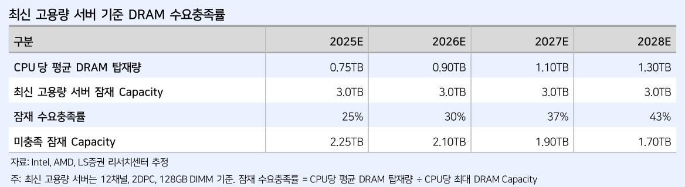
LS 표. 2028년 평균 1.3TB를 쓰는데 플랫폼 물리 한계는 3TB — 충족률 43%. 미충족 1.70TB가 남는다. 가격이 올라도 탑재량을 줄이기 어려운 이유. 자료: Intel·AMD·LS증권
Agentic AI가 이걸 밀어올린다. 다만 병목의 성격이 중요하다 —
HBM-DRAM Stall은 2028년에도 전체 연산시간의 약 2%에 불과하다.
즉 대역폭이 아니라 "이 많은 걸 어디에 둘 것인가"의 용량 문제다.
→ HBM → Local DRAM → CXL → Storage 계층화.
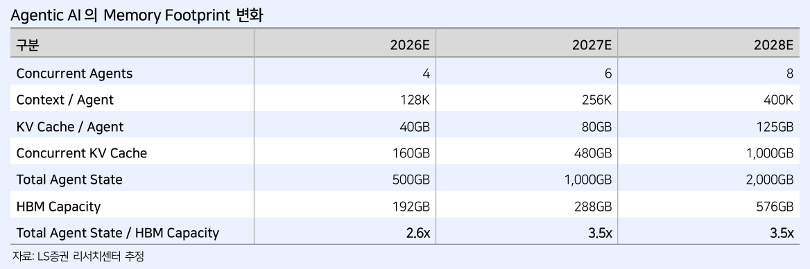
LS 표. Total Agent State 500GB → 2TB, HBM Capacity 192 → 576GB. State/HBM = 2.6x → 3.5x — HBM으로는 못 담는다. NVIDIA도 Vera Rubin에서 CPU Memory/HBM을 1.3x→2.6x로 올렸다(단, 54TB→28TB 하향 보도 있음). 자료: LS증권 추정
03
가격 — 지불능력이 상단을 정한다
이 보고서가 다른 메모리 리포트와 갈라지는 지점. 가격 상단을 수급이 아니라 고객이 얼마까지 낼 수 있는가로 역산한다.
NVIDIA Q는 선단·CoWoS에 막혀 +10~15%인데 FY2028 컨센 매출은 +43% → P·Mix가 +24~30% 올라야 한다.
그런데 HBM은 이미 NVIDIA 매출원가의 41%(FY2027 146조 중 60조)를 차지한다.
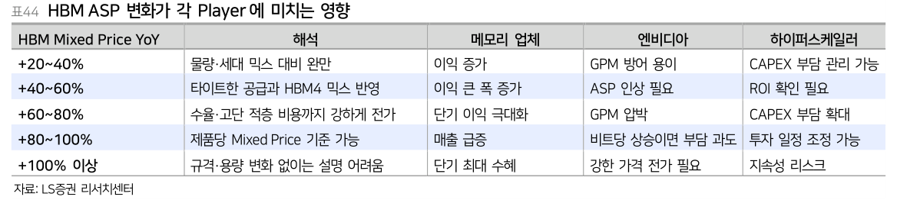
LS 표44.+40~60%가 Goldilocks — 메모리 이익 증가와 NVIDIA GPM 방어가 동시에 가능한 유일한 구간. +60~80%부터 GPM 압박, +80% 이상은 규격·용량 변화 없이는 지속 불가. 자료: LS증권
이 노트에서 가장 오래 쓸 문장:"메모리 가격의 Peak는 공급 부족이 해소되는 시점보다,
공급망 하단의 고객이 추가 비용을 더 이상 감당하기 어려워지는 시점에 먼저 나타난다."
→ Peak를 보려면 DRAM 수급이 아니라 NVIDIA GPM · CSP Cloud 마진 · CAPEX/FCF를 봐야 한다.
이건 CAPEX 게이트 게이트 ②(수익화 실측)와 같은 질문이고,
비로소 관측 가능한 숫자로 바뀌었다.
04
중국 반론 점검 — 통념과 정반대
미래에셋(강민희·김영건)이 8/17~22 중국 현지 7개사를 답사했다. 통념은 "중국이 자립하면 물량이 밀려나와
가격이 깨진다"인데, 결론이 정반대였다.
① 가속기 3사 공통 화두가 HBM이었다(Moore Threads는 GDDR→HBM 전환, 홍콩 상장 조달 목적 자체가 HBM 공급망).
② 그런데 사용자들이 체감하는 HBM3급 국산화 시점은 "약 2년 뒤" — CXMT 1H26 양산이라는 보도보다 훨씬 보수적이다.
자기에게 불리한 증언이라 신뢰도가 높다.
③ 그리고 CXMT가 HBM으로 Capa를 돌릴수록 전환비율이 컨벤셔널 대비 4배라 잠식이 크다.
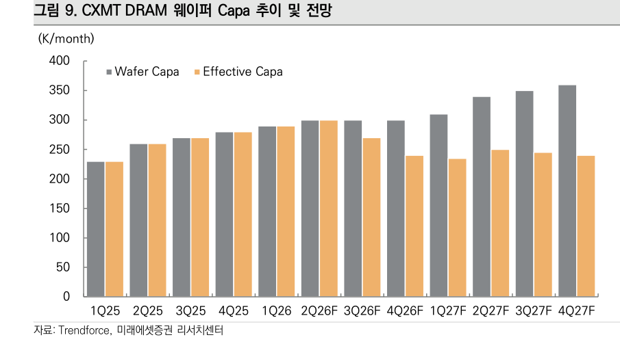
미래에셋 그림 9. Wafer Capa(회색)는 계속 느는데 Effective Capa(주황)는 27년 들어 오히려 감소. 27년말 10%를 HBM에 할당하면 실질 Capa가 25년보다 낮아진다. 자료: Trendforce·미래에셋증권
결론이 LS와 겹친다. LS는 3사 기준으로(HBM 우선배분+1d 지연), 미래에셋은 CXMT 기준으로(HBM 잠식 4배)
Conventional DRAM 공급이 안 는다는 같은 결론에 독립적으로 도달했다.
미래에셋 표현: "중국발 공급 물량 경쟁 심화보다 중국내 자립에 따른 공급 역량 소모가 크다."
곁가지로 장비 국산화율 20~30%(식각 40%), 수주가 PO→PA로 전환, 노광은 최선단 5nm·수율 30%로 여전히 병목.
05
판정 · 확인 지표
테제
메모리 부족은 수급이 아니라 구조다 — 공급은 Tech Migration이 죽어서, 수요는 CPU당 Content가 늘어서,
중국은 HBM 잠식 때문에 오히려 공급이 준다. 세 경로가 전부 같은 방향.
반대논리
① LS 수요모델은 Intel 서버 CPU 하나로 전체 Server DRAM을 추정 — 정작 본문은 AMD가 더 공격적(16ch)이라고 쓴다.
② Agentic AI 파라미터가 전부 자체 가정(Agents 4→8, Calls 75→250)이고 여기서 KV Cache 폭증 결론이 나온다.
③ Payroll→AI예산 체인은 5단 곱하기라 $360bn의 정밀도는 낮다.
④ 미래에셋은 답사기 = 회사 측 자기신고가 1차 소스.
⑤ 둘 다 강세론이고 LS는 커버리지 개시(솔브레인 TP 50만 등)라 구조적으로 매수다.
판정
사이클 읽는 렌즈로 채택. 매수 근거로는 쓰지 않는다.
가장 값어치 있는 건 종목이 아니라 "Peak를 어디서 보는가"를 바꾼 것 —
DRAM 수급표가 아니라 NVIDIA GPM 75%와 CSP Cloud 마진을 봐야 한다.
이번 주에만 강세 문서가 네 개째다(한종목·Stripe·LS·미래에셋).
논리가 맞는 것과 지금 사이즈를 키워도 되는 것은 별개.
KPI
① 1d·1δ 양산 시점(삼성 2027년 말? / 마이크론 2H27) — 앞당겨지면 부족 완화 ·
② NVIDIA GPM 75% 유지 여부 ·
③ CSP Cloud OPM(AWS 37.8 / Google 35.6 / MS 41%) ·
④ HBM Mixed Price YoY가 +60% 넘어가는지 ·
⑤ CXMT의 HBM Capa 할당률 ·
⑥ CPU당 DRAM 실측 탑재량(가정 1.3TB).
연결
「The tokens must flow」(2026.08.23)의 병목 사다리 첫 칸이 D램이었는데, LS가 그 칸을 80쪽으로 확대한 셈.
한종목의 "DRAM 신규 공급은 27년 말 이후 집중" 한 줄이 여기선 1d 지연 메커니즘으로 풀린다.
Stripe 서한의 토큰 물량 폭증도 KV Cache·Agent State 폭증과 같은 현상의 지출 측면.
출처: LS증권 「2030년에도 메모리 부족 — CPU Content와 지불능력으로 읽는 메모리 사이클」(2026.08.25, 정우성, 80p) ·
미래에셋증권 「중국 반도체 — 반도체 기업 답사기」(2026.08.25, 강민희·김영건, 57p).
원문 도표는 직접 캡처해 인용(교육·기록 목적). 투자권유 아님.
2026.08.23AI 인프라 사이클제본스 역설병목 사다리상환능력미래에셋 한종목
토큰은 싸졌는데 임대료는 올랐다 — 병목은 사라지지 않고 위로 올라간다
한 줄: AI 효율 개선이 인프라 수요를 없애지 않는다. 병목을 한 층 위로 밀어올릴 뿐이다
(DRAM → InP → 광통신 → 발전터빈). 그리고 이 사이클의 진짜 전환점은 기술이 아니라
청구서를 자본시장이 대신 내기 시작했다는 것 — 즉 다음 국면의 승패는 GPU를 얼마나 사느냐가 아니라
계약전력을 얼마나 빨리 가동전력과 매출로 바꾸느냐에서 갈린다.
01
사실 확인 — 값은 내려갔는데 임대료는 올랐다
"AI가 싸지면 반도체가 덜 필요해진다"는 명제는 데이터로 이미 반증됐다.
토큰 지출 단가 지수는 25.12 $1.02 → 26.5 $2.06 → 26.8.16 $1.02로 여덟 달 만에 제자리로 왔다.
그런데 같은 시점 GPU 현물·즉시사용 지수는 $2.70, 다음 날 관측 최고 $3.08을 찍었다.
토큰이 8개월 만의 최저를 찍은 바로 그날 임대료는 한 달 만의 최고를 찍은 것이다.
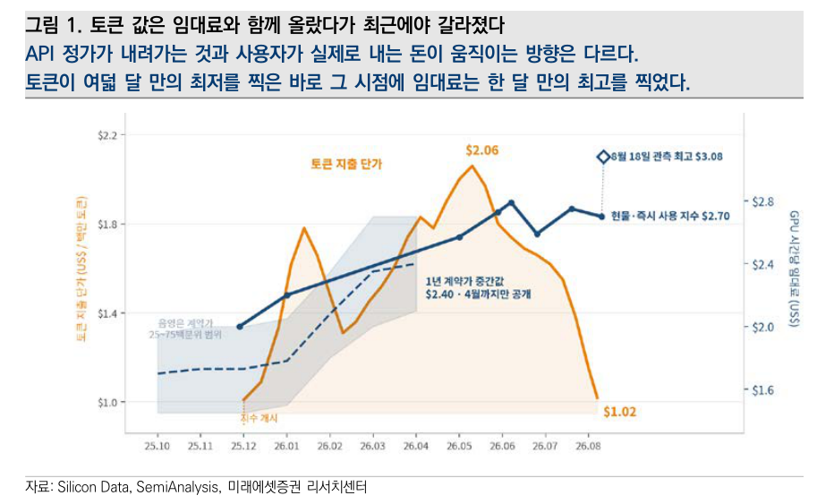
그림 1. 두 선이 함께 올랐다가 최근에야 갈라졌다. AI 서비스 가격은 모델 기업의 경쟁이 정하고, GPU 임대료는 "전력·메모리·네트워크까지 갖춘 완성형 클러스터가 얼마나 부족한지"가 정한다 — 애초에 다른 시장이다. 자료: Silicon Data·SemiAnalysis·미래에셋증권
왜 갈라지나 — 총연산 수요 = 요청 수 × 요청당 연산량.
추론 1회가 싸져도 두 항이 더 빨리 늘면 총수요는 안 준다. 실측이 정확히 그렇다:
AI 지출 기업의 직원 1인당 월지출 중앙값 $2.86(24.1) → $11.95(26.7), 4.2배.
평균 프롬프트 1,500 → 6,000토큰, 평균 출력 150 → 400토큰, 전체 시퀀스 2,000 → 5,400토큰.
코딩 비중 11%(25초) → 50%+. 긴 문맥은 KV cache를, 에이전트는 재시도·검증을 늘린다.
게다가 상위 10% 기업군의 중앙값은 $611로 전체 중앙값의 51배 — 평균 기업이 선도 기업 수준으로 가는 여지가 그만큼 남아 있다.
02
병목 사다리 — 이 노트의 핵심 그림
연산칩이 빨라지자 제약이 그 칩을 먹여 살리는 쪽으로 옮겨갔다. 중요한 건 병목이 해소되는 게 아니라 이동한다는 점이다.
AI 인프라의 단위는 GPU 한 장이 아니라 전력에 연결된 완성형 클러스터다.
그림 5. D램 계약가 +90~95% → +58~63% · InP 2인치 웨이퍼 $800 → $2,300~2,500(약 3배) · 광통신 부품 시장 $0.1bn → $39bn 이상 · 발전터빈은 엔진이 아니라 날개·단조품이 병목. 이 사다리가 기존 노트 「Kimi K3 쇼크·메모리 곡괭이론」의 바로 다음 층이다 — 비용이 연산→메모리로 옮겨갔고, 이제 메모리→광통신→전력으로 한 칸 더 올라갔다. 자료: 외신 종합·미래에셋증권
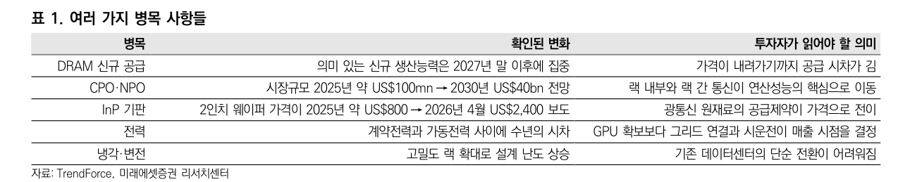
표 1. 각 병목의 "확인된 변화"와 "투자자가 읽어야 할 의미". DRAM 신규 생산능력이 2027년 말 이후에 집중된다는 줄이 가장 무겁다 — 가격이 내려가기까지 공급 시차가 길다는 뜻이다. 전력은 계약전력과 가동전력 사이 수년의 시차가 매출 시점을 정한다. 자료: TrendForce·미래에셋증권
03
A100은 죽지 않았다 — 잔존가치 0 가정의 붕괴
GPU 약세론의 핵심은 짧은 자산수명이었다. 4~5년짜리 대출로 지은 데이터센터가 만기 전에 경쟁력을 잃는다는 논리.
그래서 약세 모형은 3~5년 뒤 잔존가치를 대개 0으로 뒀다. 그 가정이 깨졌다.
✅ 깨진 증거 확인
CoreWeave가 2020년산 A100을 2029년까지 재계약(출시 9년차에도 사용료). Google은
출시 7~8년 된 TPU도 완전 가동 중(이해관계가 다른 사업자의 증언). Nebius는 2Q26 구형 GPU 가격이 전분기 대비 +30%.
구형 칩은 폐기자산이 아니라 가격에 따라 수요가 붙는 대체재다.
⚠ 그런데 이게 왜 중요한가 2차 효과
이건 회계 얘기가 아니라 자본비용 얘기다. 잔존가치 0 가정이 깨지면 → 담보가치가 생기고 →
조달금리가 내려가고 → 같은 자기자본으로 더 많은 설비를 지을 수 있다.
구형 GPU 수명 연장은 감가상각 문제가 아니라 증설능력을 키우는 금융상의 레버다.
모든 GPU를 증명할 필요도 없다 — 신용모형의 0원 가정을 깨는 데는 계약 한 건으로 충분하다.
구형 가속기의 연장가치 = 재계약 매출 − 전력비 − 직접 운영비 − 추가 자본비용.
초기 투자비를 이미 회수했다면 낮아진 단가로도 현금은 남는다. 최첨단 학습은 신형이 가져가고,
추론·임베딩·배치·연구환경은 절대성능보다 시간당 가격과 가용성을 본다.
04
같은 1GW인데 매출이 8.3배 갈린다
수요가 있다는 것과 그 수요가 누구의 매출이 되느냐는 다른 문제다.
클라우드는 연산시간을 팔고 모델 기업은 그 연산으로 만든 대답(지능)을 판다.
최종 고객에 가까운 층일수록 같은 전기에서 더 많은 가치를 가져간다.
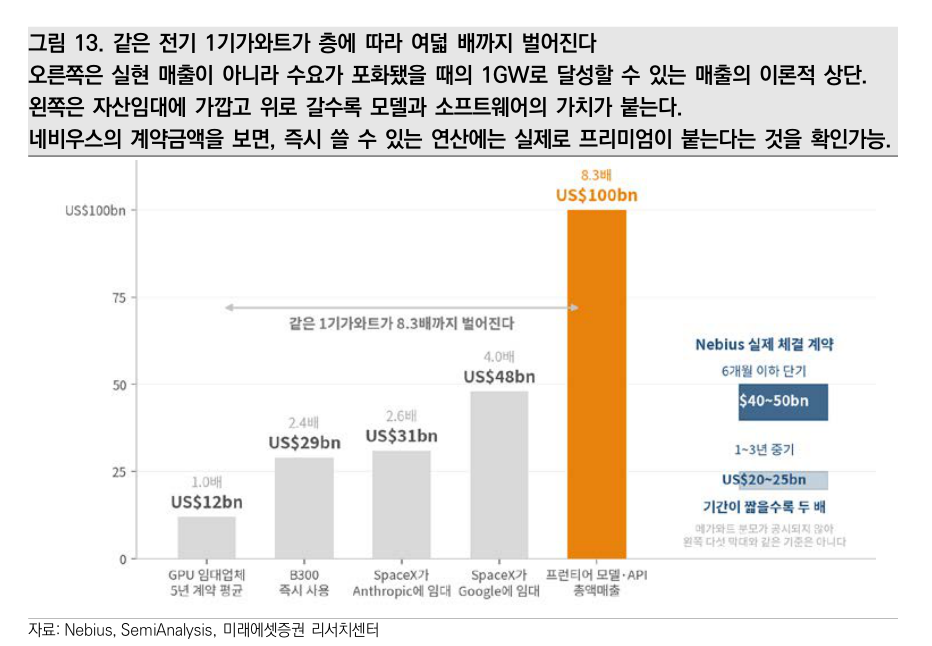
그림 13. 1GW 장기 GPU 임대 $12bn → 프론티어 모델·API 직판 $100bn(8.3배). 오른쪽은 실현 매출이 아니라 수요 포화 시 이론적 상단이라는 점에 주의. 다만 Nebius 실제 계약(6개월 이하 단기 $40~50bn vs 1~3년 중기 $20~25bn)이 "즉시 쓸 수 있는 연산에는 실제로 프리미엄이 붙는다"를 증명한다. 자료: Nebius·SemiAnalysis·미래에셋증권
차액 $88bn이 전부 모델업체 이익은 아니다. 여기서 R&D·추론비용·클라우드 사용료·판매비를 빼야 한다.
그 뒤 남는 총이익이 데이터센터 임차료와 이자를 갚는 재원이다. 그래서 결론이 이렇게 된다 —
모델 기업의 총마진이 AI 인프라 전체의 상환능력을 결정한다.
05
상환능력 역산 — 매출이 1.6배 되면 9GW가 선다
보고서에서 가장 유용한 계산. 추상적인 "AI 버블인가"를 검증 가능한 하나의 배수로 바꿔놓는다.
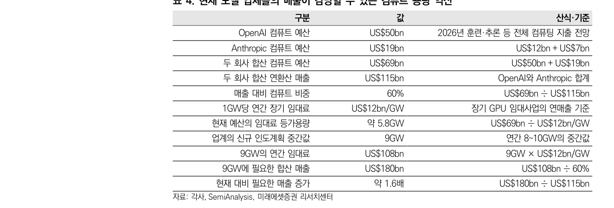
표 4. OpenAI $50bn + Anthropic $19bn = 컴퓨트 예산 $69bn. ÷ $12bn/GW = 현재 예산은 약 5.8GW어치. 두 회사 합산 연환산 매출 $115bn 대비 컴퓨트 비중 60%. 업계 신규 인도계획 중간값 9GW를 같은 비중으로 받치려면 합산 매출 $180bn → 지금의 약 1.6배. 자료: 각사·SemiAnalysis·미래에셋증권
이 계산을 보수적으로 읽어야 하는 이유와 그 반대.
ⓐ 보수적 방향 — 9GW를 두 회사가 전부 부담한다고 가정했다. 실제로는 Google·Meta 등도 쓰므로 실제 문턱은 더 낮다.
ⓑ 공격적 방향 — $12bn/GW는 장기 임대가다. 공급부족 국면의 즉시사용 단가는 더 높으므로 같은 예산이 더 적은 GW를 산다.
어느 쪽이든 "1.6배"라는 숫자 자체가 모니터링 가능한 단일 지표가 된다는 게 이 표의 값어치다.
참고 실측: 두 회사 합산 연환산 매출은 25.11 $27bn → 26.7 $105bn(3분기 만에 3.9배), 최근 $115bn.
7월 전월비 +14%, 전년비 +490%로 재가속. ChatGPT Work·Codex 주간활성 2,000만 명(전체 10억 대비 2%, 침투율은 낮고 속도는 빨라지는 중).
Anthropic의 $65bn은 순액 기준으로 재계산된 값이라는 관측이 있고, 총액 기준이면 $80bn 초과 추정.
06
그래서 무엇을 봐야 하나 — 계약전력이 아니라 가동전력
수요가 공급보다 빨리 늘 때 초과수익은 가장 부족한 자원에서 발생한다. 부족한 건 GPU만이 아니다 —
전력 인입 가능한 부지, 변전설비, HBM, 광통신 부품, 냉각, 발전터빈, 숙련 건설인력.
하나라도 없으면 데이터센터는 안 돈다.
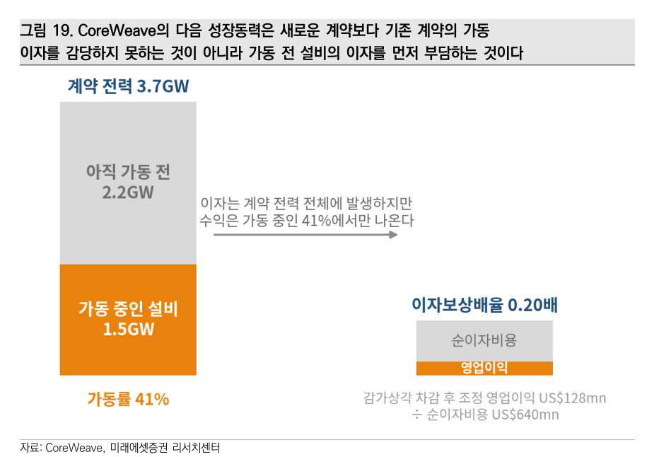
그림 19. CoreWeave 계약전력 3.7GW vs 가동 1.5GW = 가동률 41%. 이자보상배율 0.20배(조정 영업이익 $128mn ÷ 순이자비용 $640mn). 이자는 계약전력 전체에서 발생하는데 수익은 41%에서만 나온다 — 이익을 못 내는 게 아니라 가동 전 설비의 이자를 먼저 부담하는 구조. 실행이 늦으면 그대로 신용 이슈가 된다. 자료: CoreWeave·미래에셋증권
속도가 새로운 희소자원을 만든다는 사례도 명확하다. 100MW 그린필드의 업계 "상식"이 약 2년인데
SpaceXAI는 3~4개월로 줄였다(Colossus 1 멤피스 122일, 1차 확장 92일, Colossus 2 91일 → 64일).
남들보다 1년 먼저 켠 1GW는 같은 1GW가 아니다.
한편 미국 26~28년 신규 가동 용량의 32%·43%·38%가 기존 부지의 확장분 — 빅테크는 경주의 절반을 끝낸 상태에서 출발한다.
07
판정 · 반증조건
테제
효율 개선은 인프라 수요를 없애지 않고 병목을 위로 민다. 따라서 AI 사이클을 파는 근거로
"토큰값 하락"을 쓰면 안 된다. 대신 봐야 할 것은 병목 층의 가격(DRAM 계약가, InP, 광부품)과
가동전력 전환 속도다. 수익은 희소자원을 소유하거나 · 먼저 확보하거나 · 직접 만들어 파는 쪽에 집중된다.
반증조건
ⓐ 모델 매출 성장률이 꺾여 1.6배 격차가 안 좁혀질 때 (표 4를 분기마다 다시 계산) ·
ⓑ 컴퓨트 금융이 증권화 단계로 못 넘어가고 사모대출에서 멈출 때 (연기금·보험 자금 유입 실패) ·
ⓒ NVIDIA 보증이 실제로 발동되는 순간 — 그 자체가 "GPU 가격과 고객 신용이 동시에 무너졌다"는 신호다.
판정
사이클 지속 쪽에 무게. 단, 이 보고서는 강한 불(bull) 문서라는 점을 감안해서 읽는다.
결론이 "증설을 멈출 이유보다 계속할 이유가 더 강하다"인데, CAPEX 게이트에서 이미 배운 게
"게이트 ① 지출 의지 4/4 우호인데 같은 기간 −30%"였다. 지출은 선행, 회수는 후행이고 그 사이에서 멀티플이 죽는다.
그러므로 이 노트를 매수 근거로 쓰지 않는다 — 병목 층(메모리·광통신·전력)의 가격 지표와
가동전력 전환율을 추적하는 렌즈로만 쓴다. 자본·신용 파트는 CAPEX 게이트 워치로 넘겼다.
KPI
① OpenAI+Anthropic 합산 연환산 매출 (목표 $180bn까지의 거리) ·
② DRAM 계약가 MoM·27년 말 신규 캐파 일정 ·
③ InP 2인치 기판 가격 ·
④ CoreWeave·Nebius 분기별 가동전력 증가율 vs 이자비용 증가율 ·
⑤ GPU 현물·즉시사용 지수 vs 토큰 지출 단가 지수의 갭 ·
⑥ 컴퓨트 담보 증권화(ABS) 1호 발행 여부.
연결
「Kimi K3 쇼크·메모리 곡괭이론」(2026.07.18) = 비용이 연산→메모리로 이동 → 이 노트의 병목 사다리가 그 다음 층.
「오픈소스 vs 프론티어 3축 프레임」(2026.07.26) 축① 물량=TCO 손익분기 → 토큰 지출 단가 지수가 그 축의 실측 시계열.
광통신 병목 상세는 광통신 · 네트워크 노트로 분리했다.
출처: 미래에셋증권 「AI Focus — 은하지능전설 2부: The tokens must flow」(2026.08.21, 한종목, 29p).
6월 「악마는 병목을 입는다」의 후속편. 수치는 보고서 작성 시점(2026.08) 기준.
보고서 목차는 "약 5GW"로, 본문·계산은 "약 5.8GW / 약 6GW"로 표기돼 있어 본문 기준을 따랐다.
원문 도표는 보고서에서 직접 캡처해 인용(교육·기록 목적). 투자권유 아님.
2026.07.26오픈소스 vs 프론티어TCO 손익분기3축 프레임All-In Ep.282
오픈소스 AI 논쟁 — 축이 틀렸다
한 줄: "오픈 vs 클로즈드"는 잘못된 축이다. 실제로는 물량축(자체호스팅 손익분기를 넘느냐) ·
레이어축(모델은 커모디티, 하네스·계약은 아님) · 스택축(오픈은 프론티어의 파생물)이 겹쳐 있고,
대부분 기업의 답은 양쪽 다 아닌 "클라우드에서 오픈웨이트 임대" —
그래서 가치 이전의 종착지는 기업이 아니라 클라우드다.
01
사건 — 무엇이 논쟁이 됐나
Kimi K3 이후(아래 7/18 노트 참조) 미국에서 중국 오픈소스 모델 금지론이 부상.
백악관이 검토한다는 Axios 보도, 상무장관 Lutnick은 반대한다는 Wired 보도가 같은 주에 엇갈렸고,
Polymarket "2026년 미 정부의 오픈소스 모델 금지" 확률이 22% → 45%로 급등.
Anthropic은 "산업적 규모의 distillation 공격"이라는 프레임으로 규제를 요청 중.
All-In Ep.282에서 출연자 4인이 전원 오픈소스 편으로 이 논쟁을 다뤘다 — 아래는 그 논지의 검증과 재구성.
⚠︎ 정책 리스크를 읽을 때의 전제 정정
David Sacks는 2026.03.26부로 백악관 AI·크립토 차르가 아니다. SGE(특별정부고용) 신분의
연 130일 근무 상한을 소진해 물러났고 현재는 PCAST(대통령 과학기술자문위) 위원.
그의 "백악관은 아직 결정 안 했다"는 결정 정보가 아니라 로비 진행 상황으로 읽어야 한다
(본인도 방송에서 "on good authority", "내 목소리도 한 표 보태는 차원"이라고 표현).
실제 집행 레버는 상무부(수출통제·BIS·ICTS)와 OSTP(Kratsios)에 있다 — Polymarket 45%가
그의 발언에도 안 내려간 이유.
02
축 ① 물량 — "정수기 vs 생수"
"오픈소스가 50~100배 싸다"는 주장은 조건부로만 참이다. 쉽게 보려면 물 마시는 방법 3가지로 놓으면 된다.
🏪
편의점 생수
= 프론티어 API
한 병이 제일 비싸다. 대신 설치비 0원, 마실 때만 돈이 나간다.
가끔 마시면 이게 제일 싸다
🚚
대용량 정기배달
= 클라우드 오픈웨이트 임대
편의점보다 훨씬 싸고, 설치·관리는 여전히 남이 해준다. (Bedrock · Vertex · Azure)
대부분 기업의 실제 정답
🔧
정수기 + 관리기사 상주
= 오픈모델 자체 호스팅
물 한 잔은 거의 공짜. 대신 설치비·필터·관리기사 인건비가 매달 고정으로 나간다.
물을 어마어마하게 써야 이긴다
핵심은 "물을 얼마나 마시냐"다. 하루 한 잔 마시는 사람이 관리기사를 고용하면 손해고,
카페를 운영하면 정수기가 압도적이다. 오픈소스는 싸다 — 단 토큰 물량이 클 때만.
손익분기 추정 — 자체 호스팅 고정비를 연 약 $250만으로 잡을 때
(프론티어급 오픈모델 HA 서빙 8×H200급 replica 2~3개 $50~100만 + ML/인프라 엔지니어 2~4명 $100~200만 + eval·가드레일·3개월 주기 모델 교체 대응 $30~50만),
대안별로 이만큼은 써야 본전이다:
카페 주인. 토큰이 곧 원재료라 물량이 손익분기를 압도적으로 넘는다 → 실제로 오픈모델로 대거 이동. Composer 2는 Kimi K2.5 위에 자체 코딩데이터로 post-train.
일반 대기업코카콜라 類
하루 한 잔 마시는 사람. 게다가 토큰이 아니라 좌석(seat)을 산다 — $30/명/월. 오픈소스에는 "좌석"이라는 상품 자체가 없다(정수기 회사는 물만 팔지 카페를 차려주진 않는다). 50배 비교가 구매 행위에 적용조차 안 된다.
에피소드 내부 모순의 해소: Chamath "50~100배 싸다" vs Sacks(Ben Thompson 인용) "K3는 별로 안 싸다" — 둘 다 맞다.
50배 싼 모델과 프론티어급 오픈모델은 같은 모델이 아니다. 2.8T MoE는 가중치만 FP8로 1TB라 서빙에 진짜 돈이 든다.
구세대 소형 오픈 vs 플래그십 = 30~50배 / 프론티어급 오픈 vs 플래그십 = 2~5배. 또한 기업 AI 총원가에서 모델 비용은 10~30%(나머지는 통합·데이터배관·체인지매니지먼트·보안심사)라
모델값 3배 차이는 프로그램 원가 1.3~1.6배 차이다 → "코카콜라가 리레이팅당한다"는 논증은 성립하지 않는다.
가장 중요한 결론: 대부분 기업의 정답이 "클라우드에서 오픈웨이트 임대"라면,
가치 이전은 "프론티어랩 → 기업"이 아니라 "프론티어랩 → 클라우드"다.
Chamath 본인도 방송에서 인정했다 — "오픈소스의 종말을 원치 않는 또 다른 집단이 있다. 가장 싼 모델을 서빙하려는 자들, 거기가 마진 포획 지점이니까."그의 인프라 테제와 코카콜라 예시는 서로를 반박한다.
03
축 ② 레이어 — 모델 커모디티 ≠ 회사 커모디티
엔진이 공짜인 것과 그 층 위가 무가치한 건 전혀 다른 명제다.
DB 엔진(Postgres 무료) 위에 Oracle·Snowflake·Databricks가, OS(Linux 무료) 위에 Red Hat($340억)과 AWS($1조+)가 섰다.
커모디티화는 층(layer)의 문제지 회사의 문제가 아니다 — 그래서 전환비용을 층별로 갈라 봐야 한다.
레이어
전환비용
판정
API 토큰
거의 0 — 엔드포인트 한 줄
커모디티 맞음
하네스·에이전트
워크플로·프롬프트·서브에이전트 전면 재작성
해자
엔터프라이즈 계약
SOC2·FedRAMP·데이터레지던시·면책, 조달 12~18개월
해자
컨텍스트·커넥터
데이터 중력 — 붙을수록 못 뗀다
해자
eval 스위트
모델 패밀리에 튜닝된 평가체계 전면 재구축
과소평가된 해자
에피소드가 통째로 빠뜨린 해자 — RL 데이터 플라이휠.
Claude Code·Codex가 매일 수집하는 건 매출만이 아니라 장기 과제에서 무엇이 성공하고 실패했는지의 궤적이다.
distillation으로는 출력은 훔쳐도 "어떤 시도가 틀렸는지"는 못 훔친다. 에이전틱 RL에서 결정적이고 복리로 쌓인다.
출연자 4인 중 아무도 언급하지 않았다 — 넷 다 오픈소스 쪽에 book이 있다.
그래서 크럭스는 하나의 숫자로 좁혀진다 — 매출 믹스(좌석 vs API 토큰).
좌석 비중이 오르며 총마진이 개선되면 해자는 진짜고, API 토큰 비중이 유지되며 ASP·총마진이 같이 내려가면 커모디티다.
ARR 절대값이 아니라 총마진 방향과 매출 믹스를 봐야 한다.
04
축 ③ 스택 — 오픈은 프론티어의 파생물
에피소드가 스스로 증명해놓고 결론을 안 낸 지점. Sacks가 "오픈 생태계의 활력"으로 든 사례를 거꾸로 따라가면:
Cursor Composer 2미국 스타트업
◀
Thinking Machines최고 美 오픈모델
◀
Kimi K2.5 / K3중국 오픈웨이트
◀
프론티어 랩교사(teacher)
distillation에는 반드시 교사가 필요하다. 교사가 사라지면 학생은 교사의 수준에서 동결된다.
경제학은 더 결정적이다 — $50~100억짜리 훈련런을 불확실한 회수 전망으로 지르는 주체가 누구인가:
오픈웨이트 공급자
자금 논리
자기수익으로 지속?
Meta
전략적 손실 리더 (경쟁사 해자 파괴)
경영진 의지에 달림
중국 랩
국가 전략 / 헤지펀드 부업(High-Flyer)
상업 논리 아님
Mistral 等
VC 보조금
유한
오픈소스는 누군가 지불한 R&D의 확산 메커니즘이지, R&D 자금조달 메커니즘이 아니다.(공정한 반례: DeepSeek R1의 GRPO는 진짜 오리지널 기여. 오픈 랩이 혁신을 못 한다는 게 아니라, capex 규모의 프론티어 런을 반복 감당할 수익모델이 없다는 것.)
이 축은 양쪽을 다 벤다. ▸ 금지론 반박 — 오픈이 파생물이면 구조적으로 6~12개월 뒤다. 그럼 실존 위협이 아니고 긴급조치 명분이 사라진다.
"기생적 추종자"와 "우리를 파괴할 존재"를 동시에 주장할 수 없다.
▸ 오픈 승리론 반박 — "오픈이 이기고 프론티어랩이 죽는다"는 균형이 아니다. 능력 성장이 마지막 교사 수준에서 멈추고, 그 다음엔 오픈모델도 정체한다.
→ Sam Altman의 "프론티어와 오픈 둘 다 미국이 이겨야 한다"는 모순이 아니라 스택 논리다.
오픈이 물량(95%)을, 프론티어가 어려운 꼬리(5%)를 맡는 하나의 스택. 오픈웨이트는 안드로이드처럼 세계의 기본 substrate와 표준을 정한다.
판정
"오픈 vs 클로즈드"로 포지션을 잡지 말 것. 세 축이 독립적으로 움직인다 —
① 물량축: 대부분 수요가 클라우드 오픈웨이트 임대로 수렴 → 최종 수혜는 하이퍼스케일러·실리콘
② 레이어축: 눌리는 건 모델 층이지 회사가 아님 → 좌석·하네스·계약 보유자는 별개
③ 스택축: 프론티어와 오픈은 보완재 → 프론티어 붕괴 시나리오는 오픈에도 악재.
출연자 4인 전원이 물량축의 한쪽 끝(고물량 AI 네이티브 스타트업) 데이터로 축 ①②③ 전부를 결론냈다 —
설득력 있게 들리면서도 어딘가 안 맞는 이유. 전원 book talking(Sacks=정책 포지션, Chamath=8090 온프레미스 배포, Jason=스타트업 투자, Friedberg=구글 출신)이라 반대편 논거는 별도 크로스체크 필요.
KPI
① Polymarket 오픈소스 금지 확률 (현 45%) — 상무부/BIS 실제 규칙제정 착수 여부가 진짜 신호
② 프론티어랩 매출 믹스(좌석 vs API)와 총마진 방향 — 축 ②의 유일한 판별식
③ OpenRouter 오픈소스 토큰 비중 (현 50%+) 추세 — "dark tokens"라 매출 차트엔 안 잡힘
④ 하이퍼스케일러 관리형 오픈웨이트 서빙 매출 공개 여부 — 축 ①의 수혜 실증
capex 게이트 워치(~8/8) 연결: 같은 주 구글 capex 가이던스 $1,950~2,050억(내년 추가 상향 예고),
테슬라 capex +140% YoY — capex 자체는 안 줄었다. 그런데 구글 -7%, 테슬라 -14%, 둘 다 FCF 마이너스(구글은 상장 이래 최초).
"capex 중단 → 메모리 조정"과 다른 제3의 시나리오: capex는 지속되지만 자본시장이 조달비용을 올리는 국면
(메모리 수요 유지 + 하이퍼스케일러 멀티플 압축). 게이트 프레임에 이 케이스가 들어있는지 점검 필요.
참고: 구글 상장 이후 25년 평균 ROIC 32% · OpenAI 2026 1Q 손실 $70억(매출 $1당 비용 $2.22, PitchBook) · Anthropic 저작권 합의 $15억(도서 700만권, 권당 $3,000) — 미국 역사상 최대 저작권 합의.
출처: All-In Podcast Ep.282(2026.07) 트랜스크립트 · CNBC(Sacks 차르 사임 2026.03.26) · Axios · TechCrunch · Bloomberg · PGIM. TCO·손익분기는 자체 모델링 추정(가정 명시) — 실측 아님. 투자권유 아님.
2026.07.18메모리 · AI 인프라Kimi K3오픈웨이트레이어 케이크
Kimi K3 쇼크 — 케이크의 가운데가 눌릴 때, 곡괭이는 팔린다
한 줄: 7/16 K3 쇼크로 반도체가 폭락했지만, 실제로 squeeze당하는 층은 Model이고 메모리는
구조적 수혜자가 구조적 피해자의 대리로 팔린 것(수급 문제).
희소 MoE는 비용을 연산→메모리로 옮긴 구조라, 오픈웨이트 확산은 메모리에 중립~긍정.
01
사건 — 팩트체크 완료
7/16 Moonshot AI가 Kimi K3 출시. 2.8T 파라미터 MoE(전문가 896개 중 16개 활성 = 1.8%), 1M 컨텍스트,
7/27 가중치 전면 공개 예고. Frontend Code Arena 1위(1,679점, 오픈웨이트 최초)지만 실무 태스크(GDPval-AA v2)는
Fable 5 Max·GPT-5.6 Sol Max에 이은 3위 — "한 세대 전 프론티어(Opus 4.8)를 제쳤고, 현행과의 격차를 압축한 추격"이 정확한 독법.
API 가격은 전작 대비 3~4배 인상($3/$15). 학습비용 $15~25M설은 외부인의 FLOPs 추정일 뿐.
같은 날 반도체 폭락(하이닉스 -11.5%, KOSPI 사이드카)은 TSMC 캐펙스 가이던스 상향 + CXMT $8.6B IPO 소식이 겹친 복합 촉발 — K3 단독 인과로 읽으면 오독.
02
구조 — squeeze는 Model 층, 매도는 메모리에 착탄
레이어 케이크(Energy–Chip–Infrastructure–Model–Application)에서 이번 사건이 압박하는 층은 Model.
추격 시차 단축 = 학습 런 감가상각 가속, 오픈웨이트 = 클로즈드 API 가격결정력에 상한.
그런데 위협받는 당사자(OpenAI·Anthropic)는 비상장이라, 시장은 유동성 있는 상장 AI 종목 — 만만한 메모리 — 를 대신 팔았다.
모델 층을 향해야 할 매도가 반도체 층에 착탄한 것 = 미스프라이싱의 원천.
03
메모리 함의 — 청구서는 연산이 아니라 메모리로 간다
극단 희소 MoE는 비용을 없앤 게 아니라 연산에서 메모리로 이전한 구조
(K2→K3: 총 파라미터 2.8배 vs 활성 1.6배 — 덩치가 연산보다 빠르게 큼).
① 대형 서빙: 배치로 묶으면 896개 전문가가 사실상 전부 호출 → 풀 HBM 상주 강제, HBM 수요 불변.
② 소배치 온프레미스(금융·정부·방산): 자주 쓰는 전문가만 HBM, 나머지는 서버 DRAM 오프로딩 성립 —
랙스케일 가격이면 도입 포기했을 고객이라 서버 RDIMM에 "없던 수요"가 신설(굶던 사람이 도시락을 사는 것).
③ 초저가로 점유율 사던 추격자가 가격을 3~4배 올림 = 지불의사 실재의 직접 증거 → 캐펙스 사이클 지속의 강세 논거.
04
확장 — 앱 레이어 그립 지도 · 판정
후속 논의: Application 층의 승자는 전환비용 사다리(접촉 < 습관 < 기억 < 자산 < 내장) × 잡은 지갑 수로 판별.
지배자 자리(도달 최상 × 내장)는 공석, 최근접은 MS(단, 마찰 락인 + 시대 이월 리스크).
사다리를 오르는 화살표는 OpenAI(기억→자산, io 디바이스)·Anthropic(기억→내장, 코딩 에이전트) 둘뿐인데 둘 다 비상장.
Jay 결론: 생태계 보유자가 모델을 이식하는 게, 모델 보유자가 생태계를 만드는 것보다 쉽다 → 애플 승자론
(모델 커머디티화가 진행될수록 유리). 판정 트리거는 7/27 가중치 공개 —
토큰당 연산량·메모리 풋프린트 확정 + 서드파티 서빙 호가가 원가의 직접 측정치.
Moonshot이 서드파티 등장에 맞춰 가격을 내리면 기존 가격은 희소성 프리미엄이었다는 증거.
블로그 정리: 1편 — 어차피 메모리는 곡괭이다 ·
2편 — 누가 애플보다 더 많은 고객을 잡을 수 있을까? 출처: Arena.ai 공식 · TechCrunch · Fortune · The Decoder · MarkTechPost · Latent Space · OfficeChai · CNBC · invezz. 웹 교차검증 팩트체크(2026.07.18 대화).
2026.06.25009150 · 삼성전기실리콘 커패시터AI 패키징 수동부품전력 무결성
삼성전기 SI-CAP — AI 전력의 "라스트 인치"
한 줄: 실리콘 웨이퍼에 딥트렌치를 파서 만드는 초박형(100μm↓) 디커플링 커패시터.
AI GPU·HBM 패키지 내부, 다이 바로 옆에서 순간 전력변동을 잡아준다.
MLCC를 죽이는 게 아니라 MLCC(보드) + Si-Cap(패키지)의 듀얼 트랙으로 같이 큰다.
01
어디서 일하나 — PDN의 "라스트 인치"
전원(VRM)에서 칩까지 전류가 흘러오는 경로가 PDN(전력공급망)이다. 칩에서 멀수록 느린 변동만 받아주고,
가까울수록 빠른 변동을 받아줘야 한다. AI칩은 나노초 단위로 전력이 출렁여서, 다이 바로 옆의 마지막 한 칸이 핵심이다.
🔋
VRM
전압 레귤레이터 (전원 공급)
🟦
보드
기판 위 대용량 안정
MLCC
🟪
패키지
다이 근처 고주파 디커플링
Si-Cap
🟨
Die
GPU · HBM (전력 소비)
전원에서 멀다 · 저주파(느린 변동)가깝다 · 고주파(빠른 변동) → 라스트 인치
그래서 둘은 경쟁이 아니라 보완이다(TrendForce: "complementarity, not substitution").
엔비디아 Vera Rubin처럼 전력밀도가 오르면 랙당 MLCC 수요도 늘고 Si-Cap 침투율도 같이 오른다 —
AI 사이클이 삼성전기의 MLCC와 Si-Cap을 동시에 키우는 구조.
02
기술 — MLCC와 무엇이 다른가
항목
MLCC (적층세라믹)
실리콘 커패시터
구조
세라믹 수백 겹 적층
실리콘 웨이퍼 딥트렌치
두께
수백 μm ~ mm
100μm 이하 (초박형)
위치
보드 (기판 위)
패키지 내부, 다이 근처
ESL / ESR
상대적으로 높음
매우 낮음 (저ESL이 강점)
강점
대용량 · 고전압 · 저가
초소형 · 고주파 · 전력무결성
역할
보드 레벨 전력 안정
라스트 인치 디커플링
ESL / ESR이 뭐고 왜 저게 중요한가 — 현실의 커패시터엔 기생 저항·인덕턴스가 직렬로 딸려온다.
ESR 등가직렬저항
숨은 저항. 높으면 열로 에너지가 새고 노이즈를 못 거른다.
ESL 등가직렬인덕턴스
숨은 인덕턴스. 높으면 빠른 전류 변동에 반응을 못 한다 → AI칩에선 치명적.
왜 실리콘 캡은 ESL/ESR이 낮나(=특정 회사 비법 아님, 카테고리 물리):
① 얇아서 다이에 붙는다 → 전류 루프가 짧아 인덕턴스↓ ② 딥트렌치로 미세 셀을 대량 병렬로 깐다 → 인덕턴스는 병렬 개수만큼 줄어든다(L/n) ③ 짧고 굵은 저저항 전극 → 저항↓.
Murata·ST·삼성전기가 다같이 낮은 건 이 때문. 벤더 차이는 유전체·트렌치 깊이 같은 마진 영역.
※ 삼성 자사 "ESL/ESR 100배↓"는 단일 벤더 스펙(타사는 ~16배 주장) — 방향성은 맞되 정확한 배수는 보수적으로.
제조 계보도 갈린다 — 삼성전기는 DRAM 캐패시터 셀 구조를 응용(300mm 웨이퍼), TSMC는 로직 트렌치, Murata는 비공개.
메모리 강국의 공정 노하우를 그대로 가져온 게 삼성의 출발점.
03
"병목"이라고 봐도 되나 — 층을 나눠서
시스템 레벨 병목 Si-Cap ✗
2026년 AI 공급망의 진짜 병목은 CoWoS(어드밴스드 패키징) — 2026년치 매진, TSMC도 "공급=수요는 2027년". 다음이 HBM, MLCC도 타이트. Si-Cap을 "AI 핵심 병목"이라 부르는 건 과장.
부품 레벨 병목성 Si-Cap ✓
대신 병목의 경제학은 가진다 — ① 딥트렌치 특허·박막 노하우 고진입장벽 ② 상위 5개사 매출 63% 과점 ③ AI칩 인증이 까다로워 한번 들어가면 락인 ④ 삼성도 "수요 따라 캐파 증설 검토" = 공급 타이트.
판정: 시스템 전체의 병목축은 아니다. 하지만 소수만 만드는 고진입장벽·과점·고마진 니치로 신규 진입한다는 그림 —
투자 관점에선 "병목 그 자체"보다 이게 더 매력적이다.
(※ 캐파·수율·수급 타이트니스 정량 1차증거는 부족 — 정성 종합)
04
경쟁 구도 & 삼성전기 차별화
업체
기술 계보
포지션
Murata 🇯🇵
비공개
리더, 점유율 18~22%, 모바일/IoT
TSMC 🇹🇼
로직 트렌치
CoWoS에 임베디드 내재화
STMicro 🇪🇺
실리콘캡 전통강자
산업·통신 주력 (AI비중 제한적)
Empower 🇺🇸
임베디드 ECAP
'26.2 AI/HPC 3종 출시, 신흥
삼성전기 🇰🇷
DRAM 기반·300mm
후발이나 3중통합+대형수주로 급부상
차별화 ① 3중 통합(유일). "컴포넌트(MLCC)도, 실리콘캡도, 기판(FC-BGA)도 다 하는 곳은 삼성전기뿐" — AI 패키지 부품을 토털 솔루션으로.
차별화 ② 팹리스 모델. 설계·테스트만 내재, 웨이퍼는 파운드리·패키징은 OSAT 외주 → 추가 대규모 capex 없이 매출 확장 = 수익성 레버리지.
(※ "고객에 엔비디아·AMD·아마존 포함"은 FC-BGA 기판 고객을 Si-Cap 고객으로 혼동한 것 — Si-Cap 확정 출하는 마벨 + 삼성전자 Exynos2600뿐, 나머진 검토.)
05
상업화 타임라인 & 실적
CES 2025
장덕현 CEO: 고객 2곳 확보, 내부 목표 1,000억원+
2025 Q1말
마벨(Marvell) 양산 시작 — 첫 AI칩 부품 진입 ✅
2026.05.20
~1조5,570억원 공급계약 (미국 빅테크, 미공개) = 작년 매출 13.8%
2027~2028
계약 매출 본격 발생 · DB증권 추정 '27 ~5,500억 / '28 ~1조원
지금(2026)은 "수주 확보 + 양산 초기" 단계 — 실적 가시화 전 모멘텀. 시장규모는 출처마다 갈려(전체 ~$4B·CAGR ~8% vs 삼성 "AI향 연 18%+") 검증된 단일 TAM은 없음.
전사 연매출 ~11조 대비 '27~28년 5,500억~1조면 유의미하나 회사를 바꿀 규모는 아직 아닌, 비중 확대 중인 신성장 옵션.
판정
삼성전기 스토리에서 2026년 가장 강한 신규 내러티브 + 중기(2027~) 실적 옵션. 단 "수주는 났지만 매출은 1년 뒤, 고객·숫자는 추정" 단계 — 공부(스토리)와 베팅(가격·타이밍)은 별개로. AI 사이클이 MLCC·기판·Si-Cap을 동반 견인하는 구조라 "AI 토털 솔루션" 리레이팅 재료로서의 가치가 핵심.
KPI
① 1.5조 계약 고객사 공식 확인(엔비디아/구글 직접 채용 여부 — 현재 추정) ② 마벨 외 2·3번째 대형 고객 ③ 캐파 증설 "검토 → 결정" 전환 ④ 2027 가이던스에 Si-Cap 매출 반영 시점.
미인대회 · 구조적 변화 · 가격액션 렌즈. 투자권유 아님 · 수치는 작성 시점 기준(2026.06).
출처: 삼성전기 IR/보도자료 · DART 공시 · TrendForce · THE ELEC · 전자신문 · 머니투데이 · Electronic Design · Wevolver · Mordor Intelligence. 다중 교차검증(deep-research).